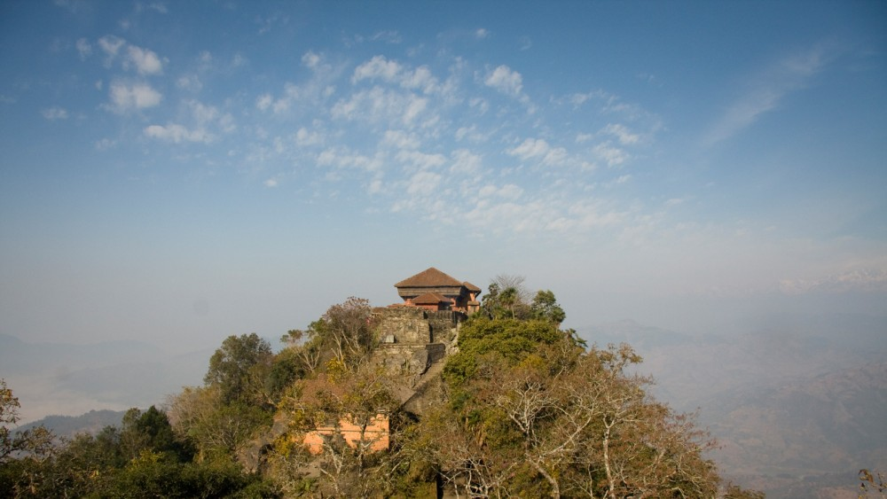
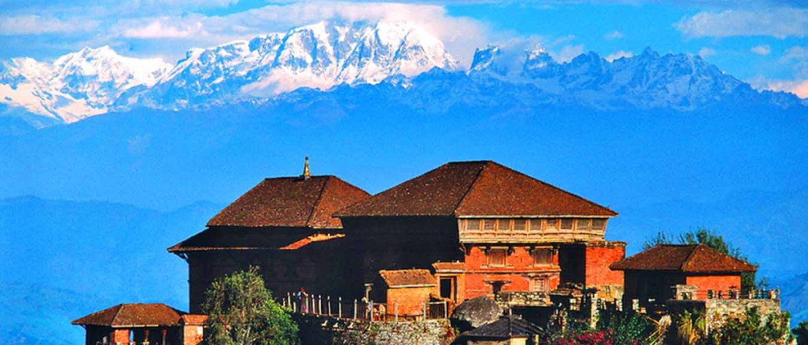
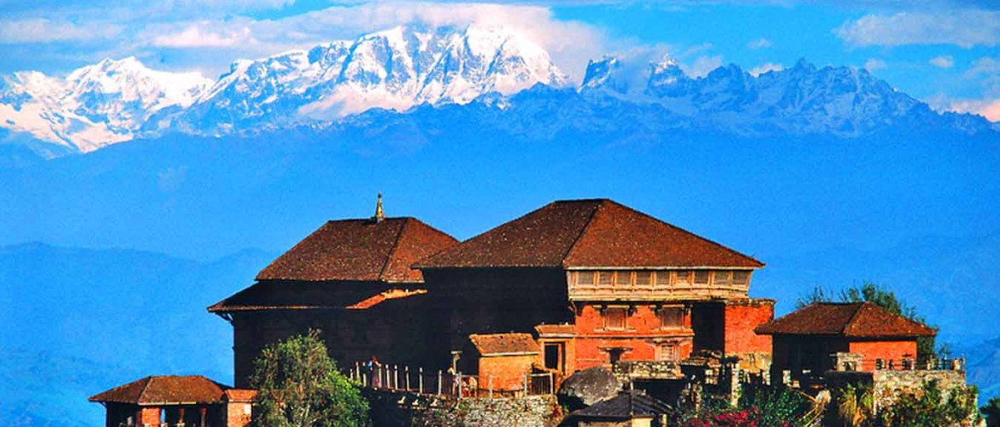

circuit love this classic, cultural town.
GORKHA
Trekkers who depart from Gorkha on the great Manaslucircuit love this classic, cultural town.
The historic birthplace of Prithvi Narayan Shah, who unified the kingdoms of Nepal in 1769 it maintains much of its centuries old charm with the main Durbar Palace as the central attraction. Trekkers often depart from here on the great Manaslu circuit while also enjoying this classic and much loved cultural town.
Gorkha is the foundation of Nepal. It is the home to the bravest-of-the-brave troops in the world, Gurkha. From the Gorkha only, the vision of present-day Nepal was sketched by the first king of the modern Nepal. Before that, Nepal was divided into small kingdoms until when Prithvi Narayan Shah, the first king of (modern) Nepal had the vision to unite small kingdoms into a singular strength to build a wall against the rising force from the East, East India Company.
 Gorkha holds the history of the country. The Gorkha Durbar (Palace), which is built on the hilltop above the market below, is the finest example of architectural and war-strategy of the past. From the palace, one can see the 360-degree view of the Gorkha village, which makes the palace as a vantage point, for now, but it was a strategy to protect the royal families from the invading armies, in the past.
Gorkha is mostly populated by the Gurung tribesmen, who have earned enough praise in the both World Wars, including Victoria Cross. However, despite their fierce attitude in the battlefield, they are friendly people with a tradition of genuine hospitality. Around Gorkha, one may hike to a jungle and enjoy watching hunters collecting wild honey. Honey Hunters of Nepal, a documentary from Diane Summers and Eric Valli did their famous art of work, photography and video, in Gorkha, only.
Gorkha is the foundation of Nepal. It is the home to the bravest-of-the-brave troops in the world, Gurkha. From the Gorkha only, the vision of present-day Nepal was sketched by the first king of the modern Nepal. Before that, Nepal was divided into small kingdoms until when Prithvi Narayan Shah, the first king of (modern) Nepal had the vision to unite small kingdoms into a singular strength to build a wall against the rising force from the East, East India Company.
 Gorkha holds the history of the country. The Gorkha Durbar (Palace), which is built on the hilltop above the market below, is the finest example of architectural and war-strategy of the past. From the palace, one can see the 360-degree view of the Gorkha village, which makes the palace as a vantage point, for now, but it was a strategy to protect the royal families from the invading armies, in the past.
Gorkha is mostly populated by the Gurung tribesmen, who have earned enough praise in the both World Wars, including Victoria Cross. However, despite their fierce attitude in the battlefield, they are friendly people with a tradition of genuine hospitality. Around Gorkha, one may hike to a jungle and enjoy watching hunters collecting wild honey. Honey Hunters of Nepal, a documentary from Diane Summers and Eric Valli did their famous art of work, photography and video, in Gorkha, only.